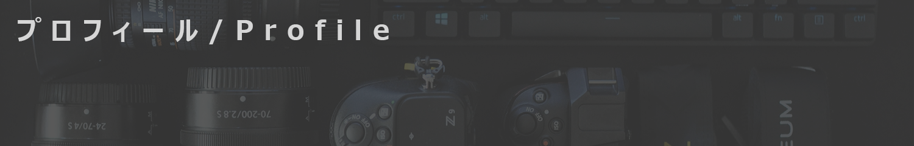

<!DOCTYPE html>
<html>
<head>
    <meta charset="UTF-8">
    <link rel="stylesheet" href="base.css">
    <link rel="stylesheet" href="table.css">
    <title>works｜iTAP</title>

    <!-- Global site tag (gtag.js) - Google Analytics -->
    <script async src="https://www.googletagmanager.com/gtag/js?id=G-KXSXBWB229"></script>
    <script>
      window.dataLayer = window.dataLayer || [];
      function gtag(){dataLayer.push(arguments);}
      gtag('js', new Date());

      gtag('config', 'G-KXSXBWB229');
    </script>
</head>
</html>
<body>
  <div id="pagebody">
  
      <!-- ヘッダ -->
      <div id="header">
      <h1><a href="index.html"></a></h1>
      </div>
  
      <!-- メインメニュー -->
      <ul id="menu">
          <li><a href="index.html">Home</a></li>
          <li><a href="gallery.html">Gallery</a></li>
          <li><a href="blog.html">Works</a></li>
          <li><a href="contact.html">Contact</a></li>
          <li><a href="profile.html">Profile</a></li>
          </ul>
  
      <!-- ヘッダ画像 -->
      <div id="img_subpage">
    
      </div>
  
      <!-- サブメニュー（左カラム） -->
    <div id="submenu">
        <h2>Works</h2>
        <ul>
          <li><a href="#info0003">撮影実績</a></li>
        </ul>
      </div>
  
      <!-- インフォメーション（右カラム） -->
    <div id="info">
              <h4 id="info0003">撮影実績</h4>
              <table class="profile">
                  <tr>
                  <th>写真</th>
                  <td>
                  東京マラソン2023<br>
                  2023板橋Cityマラソン<br>
                  第55回記念青梅マラソン<br>
                  第20回新宿シティハーフマラソン・区民健康マラソン<br>
                  福岡マラソン2023<br>
                  第40回川口マラソン<br>
                  第41回川口マラソン<br>
                  第42回つくばマラソン<br>
                  第43回つくばマラソン<br>
                  SPARTAN RACE IBARAKI SPRINT 5K<br>
                  令和4年度 千葉県スポーツ少年団 バレーボール冬季交流大会<br>
                  令和4年度 第76回千葉県中学校総合体育大会 バレーボール<br>
                  令和5年度 全国高等学校定時制通信制体育大会 第50回バレーボール大会<br>
                  令和5年度 第66回福島県中学校体育大会 バスケットボール競技<br>
                  令和5年度 千葉県スポーツ少年団 バレーボール夏季交流大会<br>
                  &emsp;&emsp;&nbsp;&emsp;&emsp;&nbsp;&nbsp;兼 第42回関東大会女子予選会 千葉県大会<br>
                  第72回世田谷区民体育大会 空手道競技大会<br>
                  第73回世田谷区民体育大会 空手道競技大会<br>
                  第53回世田谷区空手道選手権大会<br>
                  第54回世田谷区空手道選手権大会<br>
                  日本空手道連合会 第61回関東地区空手道選手権大会<br>
                  日本空手協会 第72回東京都23区空手道選手権大会<br>
                  第57回 全国道場少年剣道大会<br>
                  </td>
                  </tr>
  
                  <tr>
                  <th>映像</th>
                  <td>
                    <br>
                  </tr>
              </table>
  
      </div>
  
      <!-- フッタ -->     
      <div id="footer"><small>Copyright (c) 2023 iTAP All Rights Reserved.</small></div>
              
  </div>
  </body>
  </html>
  